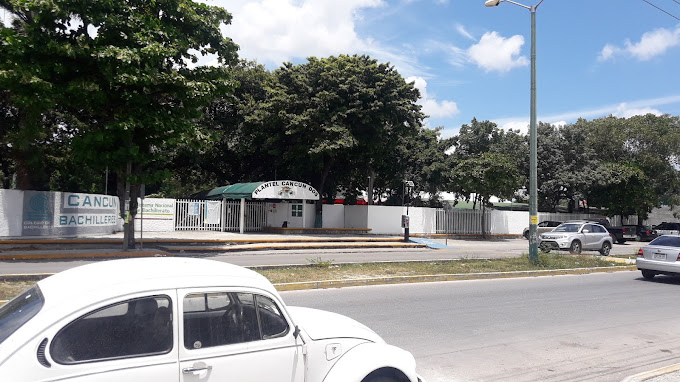

Instlaciones
Entrada Principal
La entrada principal del colegio de bachilleres Plantel Cancun Dos oficialmente ubicada enfrente de la ruta 4 colindando con la 102, alumnos y maestros caminan por esta puerta para entra al mundo del saber y enseñansas de metodos educativos con una convivencia/relacion alumno y maestro, es el principio para ser parte d esta gran comunidad del colegio de bachilleres y como se dice coloquialmente en este lugar, ser un "jaguar", arriba de esta esta el mismo dibujo representativo y si vamos mas a la izquierda tenemos el nombre de nuestra institucion al igual que el logo de cobach.

Domo pequeño
Justo despues de entrar contenplamos el domo pequeño donde nos encontramos con la "sala audivisual" y las "oficinas" donde podemos encontrar la ayuda de orientacion asi como donde se ubican las personas encargadas de la administracion del colegio ya sea direccion, venta de uniformes, ayudas con papeleos, etc;En este sitio podemos encontrar mesas para los alumnos que quisiesen descansar o tomar un ligero descanso con sus compañeros, tambien sin excluir a la famosa biblioteca con gran variedad de libros de las materias del planten que pueden ayudar en el refuerzo de los temas inentendidos para alguos alumnos, tambien se usa para pequeñas juntas donde se dan avisos de los respectivos eventos que pueden aconteceder en el colegio.

Baños
En el colegio de bachilleres plantel cancun dos cuenta con diferentes baños ubicado estrategicamente para que tods esten a los alcances de los alumnos no importa donde se ubiquen dentro del plantel, como podemos observar en la imagen estan ubicados justo a la izquierda de la entrada principal donde estan los primeros salones, esto parq cubra estos salones y los alumnos no tengan que caminar tanto para hacer sus neesidades, el mas cercano despues de estos son los que estan alado de las oficinas correspondientes en el domo pequeño, aunque estos ultimos son para maestros, los siguientes se encuentran por los salones de cinecias numericas, salones de matematicas, mas que nada son los baños de por enmedio de todos los salones y los ultimos se encuentran hasta el fondo de los ultimos salones para que los alumnos que se encuentren por esas aulas no tengan que regresar hasta el principio para hacer sus necesidades.
Tercer Pasillo de Salones
Por este pasillo de los multiples de nuestro plantel encontramos la tercera fila de salones donde se dan multiples materias pero las que mas resaltan podemos encontrar Orientación, Contabilidad, Economía, Turismo y Cálculo Integral, se le dice tercero pasillo ya que es el tercero despues del segundo donde se ubican los salones de matematicas, como puedes observar hay los sufiientes salobes para impartir las materias para tu prepracion y de lo que te puedas imaginar, de hecho se encuentra en contruccion un lugar donde haya cubiculos individuales para asesorias a almnos que las necesiten.